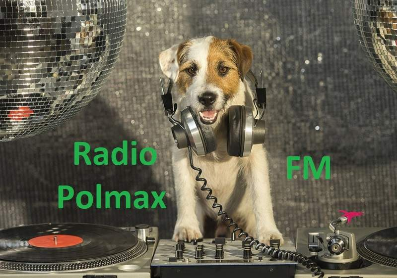

słuchaj w winampie
lbo w swoim odtwarzaczu

http://polmax1.prv.pl/polmax.m3u
Linki bezpośrednie do słuchania
http://stream.zeno.fm/1gg3kbnzbceuv
w jakości MP3
http://stream.zeno.fm/k8g215mn0d0uv
jakość aac+ mpeg4


Napisz do Radia na czacie
wiadomość albo pozdrowienia
Radio Polmax FM
<m